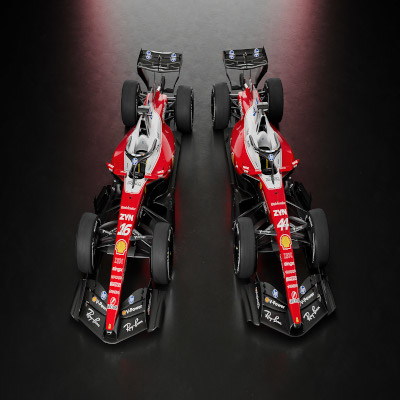

Elemento Media->Text
O carro da Ferrari mantém a tradicional identidade visual vermelha da equipe, mas apresenta uma filosofia aerodinâmica voltada para as novas características dos carros de 2026. A equipe também trabalha para extrair o máximo do conjunto de motor, recuperação de energia e gerenciamento elétrico, elementos que ganharam ainda mais importância com o novo regulamento.
